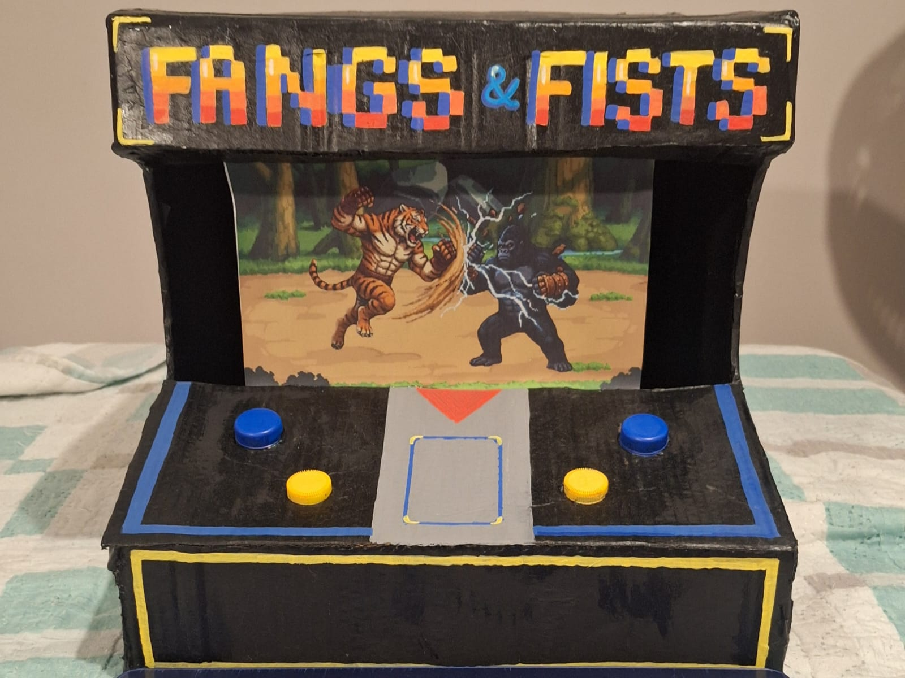
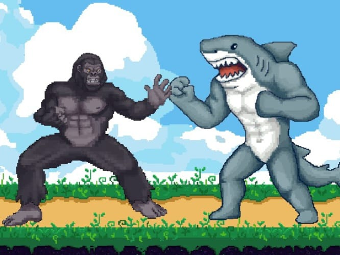

CESAR School — 1º período
Projetos.
01 Fangs & Fists Arcade físico acessível para jogadores com autismo nível 1 e TDAH. Em andamento
O problema
Jogadores com autismo nível 1 e TDAH entre 12 e 20 anos enfrentam barreiras cognitivas que a maioria dos jogos ignora — excesso de informação, interfaces confusas e mecânicas que exigem atenção sustentada.
A solução
Um arcade físico de luta entre animais, inspirado no Animal Kaiser, controlado por apenas 4 botões. Lutadores e poderes são escolhidos por cartas físicas — reduzindo a sobrecarga cognitiva.
Imagens

protótipo não funcional

o jogo
O que aprendi
Aprendi a trabalhar em grupo, a pensar no usuário antes da tecnologia, a simplificar interfaces e um pouco mais sobre o processo da criação de jogos.
02 Velorium Aventura artística e filosófica sobre a experiência pós-morte. Concluído
Sobre o jogo
Um jogo de exploração em que o jogador caminha por cenários temáticos de diferentes épocas e estilos da arte moderna após a morte do personagem. Dependendo dos itens coletados ao longo do jogo, o final muda.
O que aprendi
Meu primeiro jogo completo. Aprendi o básico de criação de jogos — level design, narrativa interativa e como transformar uma ideia simples em algo jogável.